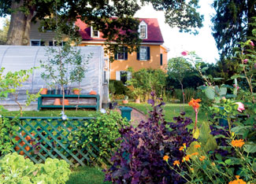
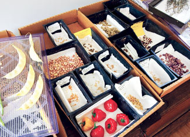
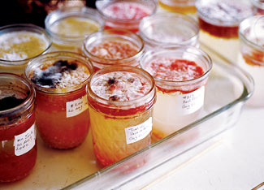
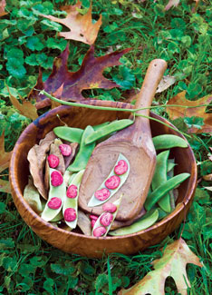
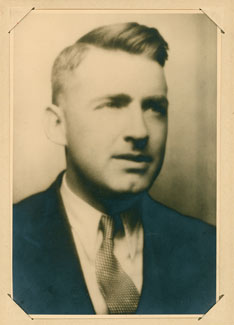
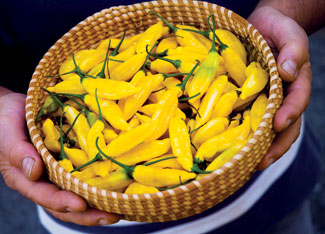
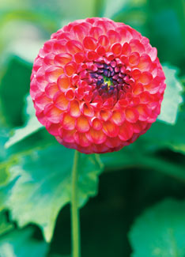
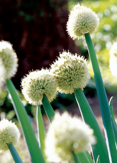

Harvesting Our Heirloom History
How my grandfather’s nearly lost seed collection led me to a passion for gardening and food history.
By William Woys Weaver
August/September 2008
It was never my intention to become a seedsman, gardener or food historian, but it happened as one of those turns in life that leads us down an unexpected path into a world of ongoing surprise and pleasure. Closeness to the earth is part of my Pennsylvania Dutch heritage, and the knack for botany came from the Quaker side of my clan. But it was my grandfather who brought those threads together. He was born in Lancaster County, married to a Quaker farm girl and was deeply devoted to plants.
My grandparents were my early mentors. I remember working beside my grandfather in his large kitchen garden with my own miniature wheelbarrow and tools. I was probably more in his way than a help, but I was also absorbing everything he told me.
My grandfather had begun collecting seeds in the late 1920s - mostly from relatives during his extensive genealogical work. That was the founding framework from which the Roughwood Seed Collection (my seed collection that now contains more than 4,000 varieties) evolved. Even before then, his penchant for collecting flowers of intense blue colors was well-established. I still have one of his specially bred tall-stemmed blue columbines, and not long ago realized that the big blue dahlia that used to tower over me as a child was none other than ‘Thomas Edison,’ a showy variety introduced in 1929.
My grandfather had been sickly all his life because of a bad childhood case of rheumatic fever, but gardening was an outlet he could enjoy without wearing himself down. He also kept racing pigeons and bees, and they brought a unique balance to the little world he created. The bees pollinated the plants and made honey, and the pigeons provided delicious squabs for potpies, not to mention rich fertilizer for the garden.
My grandfather died unexpectedly in 1956, when I was 9 years old. Manicured flower beds gradually returned to weeds, and the half-acre kitchen garden went back to lawn.
As a teenager, I worked summers in West Chester, Pa., and stayed with my grandmother. During one of her high-energy housecleaning forays we discovered - at the bottom of the big deep freezer in the cellar - hundreds of baby food jars meticulously labeled and filled with seeds. Those jars contained the core of my grandfather’s seed collection. Each jar had a story, and my grandmother was quite amused by my persistence in writing down everything she could remember about each one.
At the time, I assumed everyone had grandparents who hoarded rare seeds, enjoyed food they grew themselves and dabbled in the kind of connoisseurship that comes from eating only what is fresh and local (especially your own). I was soon to learn that this was not the case and that what we had found in the freezer was a major collection of very rare seeds, very rare indeed.
The pepper collection stood out, in part because many of the seeds were still viable. Most of those seeds had come from a local folk artist by the name of Horace Pippin. Mr. Pippin was a good friend of my grandfather, always bringing little gifts when he came to visit. Pippin had injuries from World War I that gave him “miseries” as he called them, so he would visit my grandfather to get stung by his bees, an old-time remedy for arthritis, bursitis and similar ailments.
After my graduation from the University of Virginia, I went to work for a New York publisher. Because I had studied architecture, I planned to edit books on that topic. But I ended up editing all kinds of things. I took a special interest in garden books, old herbal guides, and books about flowers and ferns. I seemed to know more about them than anyone else in the office, owing to the basic training I had as a child.
One Thing Led to Another
I decided to combine that editorial experience with my practical hands-on gardening. I took the whole seed collection out of storage. In 1968, I replanted my grandfather’s kitchen garden and traveled back to Pennsylvania every weekend to plant, weed, water and harvest.
Either some seeds were already dead (they had remained in frozen limbo for 15 years or more), or in my clumsy efforts to revive them I lost more than I should have. The peppers came through better than most things. A few tomatoes made it, as did several other things. But most of the collection was lost. If I could do it again today, the endeavor might be more successful.
Long before farmers markets regained popularity in New York (this was the 1970s), I was hauling my own fresh produce back to Manhattan and very much enjoying it.
Finally, it became obvious that working in New York was costing a lot more than it was worth. So I left my job, moved back to Pennsylvania, and offered my services as a consultant to various museums and historic sites. My architectural training gave me a good basis in historical restoration, and my practical knowledge from the garden brought a unique perspective to my work. Furthermore, many of the vegetables in my grandfather’s collection were the kind known today as heirlooms, and this is exactly what many historic sites were looking for.
In 1977, I was invited to present a research paper on historical foodways at a conference in Wales. This forced me to make a decision: Should I devote myself to culinary history full time? This was an entirely new field, one that could be invented as I went, because no one knew how to define it. I had the garden. I had the heirloom vegetables - the real stuff of culinary history - and I had a nice collection of old cookbooks and garden books that I had garnered at local flea markets and farm sales. The subject of income looked bleak, but my grandmother always said, “Live above money; put your heart in front of you and follow it,” echoing the old Quaker saying, “do the duty nearest thee.” So I followed the spirit that beckoned me. Thirty-one years and 14 books later, her advice has stood me well. I am not a rich man, but when it comes to the things that matter most, I have absolutely no regrets. And no one could ever buy the experience my garden has given me.
Heirlooms are more beautiful to my eye than modern hybrids. They don’t look plastic, like cookie-cutter, industrial food. They also taste better, and I like the challenge of growing things I’ve seen in old books. When I read a passage in an 18th century garden book describing something unique about an old variety, suddenly I make the connection. I know what it means because I have seen and tasted the same things!
The Roughwood Seed Collection became a formal entity when I moved to Devon, Pa., in 1979 and brought with me fruit trees, thousands of plants and the entire seed collection. It took five years to transfer all the plants.
My new quarters were not new at all, rather the former Lamb Tavern built in 1805. (It turned out that the man who built the tavern was a relative.)
One of my first priorities was to rebuild the Tavern’s kitchen garden, and when I did work for the National Register (the house is now a designated historic site), I discovered the outlines of old gardens from one of the aerial views. The only thing I know about the original kitchen garden is that the tavernkeeper planted parsnips, had an apple orchard and grew Welsh bunching onions, aka the poor man’s leek.
I rebuilt the raised beds where they had been and fenced them all. Those 21 beds on about three-quarters of an acre are the core of my garden today. Each year, I grow more than 300 vegetable varieties (potatoes, tomatoes, peas, lettuces, bambaras, ullucos, ocas and more) and tend more than 50 varieties of fruit, including 10 different apples, two pears, some rare cross- species fruits developed in the Ukraine in the 1920s, two types of pawpaws, six varieties of cornelian cherries, 10 varieties of grapes, six varieties of gooseberries, currants, and European strawberries (both red and white).
Expertise Emerges
By the middle 1990s, I had become quite serious about my seed collection and developed elaborate ways to ensure seed purity of the varieties I had already collected, not to mention a program for breeding vegetables of my own. My literary agent was sitting on my terrace one day, and while we chatted over a glass of wine, she noticed my extensive notebooks. These were the records of all the details I need to know about my heirloom plants: flower color, harvest times, date of planting - all the data that is normally missing when one acquires hand-me-down seeds.
My agent got it in her head that these notebooks would make a terrific garden book for beginners, but I balked because they were my personal diaries. This was not data I wanted to share with the world. “You need the money, and the book is going to be a classic,” she said. That is how Heirloom Vegetable Gardening was born.
I borrowed a greenhouse from the Mennonite Mission in Lancaster County (and later bought it from them) and began work on the book. I planted hundreds of varieties of heirloom seeds and grew everything in huge waves of activity in 1994 and 1995.
And my agent was right about the book: In 1998 it won two International Association of Culinary Professionals cookbook awards (for writing and food reference). More important, it earned heirloom vegetables a place of respect on the reference shelves of cookery, and it helped make “heirloom vegetable” a household phrase.
I joined Seed Savers Exchange and began offering many of my heirlooms to the members, but I have never listed all 4,000 or so varieties that I maintain. At one point I listed more than 400 vegetables in the Seed Savers Exchange Yearbook, and it was indeed a huge amount of work to keep stocks of seed on hand, not knowing from one season to the next who would be asking for what. My seeds are maintained according to organic gardening practices, and they are open-pollinated, one of the requirements of all heirloom varieties.
Today I have scaled back, choosing instead to work more closely with historic sites and botanical gardens, and to spend more time breeding my own varieties of lettuce, tomatoes and celery. I also keep a large collection of heirloom dahlias, in part because they are wonderful for attracting pollinators to the garden. They also act as decoys for bumblebees, the source of much unwanted cross-pollination.
If you choose heirloom varieties, you will get richer flavors, and often more nutrients, than with modern hybrids. But best of all, heirlooms connect you to literally every corner of the globe and allow you to participate in, and help perpetuate, a global tradition that links us with gardeners across thousands of years of human history.
William Woys Weaver is a contributing editor to Mother Earth News and Gourmet. His numerous books include Heirloom Vegetable Gardening, 100 Vegetables and Where They Came From, Sauerkraut Yankees: Pennsylvania-German Foods and Foodways, The Christmas Cook, Pennsylvania Dutch Country Cooking, and Country Scrapple: An American Tradition. He also has served as the associate editor and art editor for the Encyclopedia of Food and Culture.
HIGHLY RECOMMENDED by the Mother Earth News editors:
Heirloom Vegetable Gardening: A Master Gardener’s Guide to Planting, Seed Saving and Cultural History by William Woys Weaver, now on CD. If you want to explore the fabulous flavors, fascinating history and amazing diversity of vegetables, this is the book to start with. Food historian and Mother Earth contributing editor Will Weaver profiles 280 heirloom varieties, with authoritative growing advice and incredible recipes. First published in 1997, Heirloom Vegetable Gardening has since been out of print, with used copies selling online for as much as $300. We are proud to present the original text, with color photos, as a digital book on CD-ROM. Order now.
|
 ROB CARDILLO Each year, Weaver grows hundreds of varieties of fruit, vegetables and flowers. |
 ROB CARDILLO Careful records are required to maintain a seed collection with more than 4,000 varieties of fruits, vegetables and flowers. |
 ROB CARDILLO Saving tomato seeds involves fermenting them. |
|
 ROB CARDILLO The beautifully speckled ‘Jackson’s Bush Lima’ bean. |
 COURTESY WILLIAM WOYS WEAVER The author’s grandfather, H. Ralph Weaver, circa 1930. |
 ROB CARDILLO Heirlooms have richer flavors, and often more nutrients, than modern hybrids. |
|
 ROB CARDILLO Not all plants in the Roughwood Seed Collection are heirlooms; some new varieties have been developed by the author. ‘Roughwood Emperor’ dahlia. |
 ROB CARDILLO ‘Weaver Mennonite’ pepper. |
 ROB CARDILLO Welsh onion. |